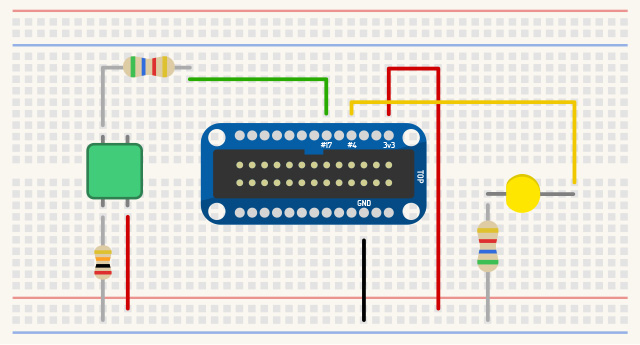
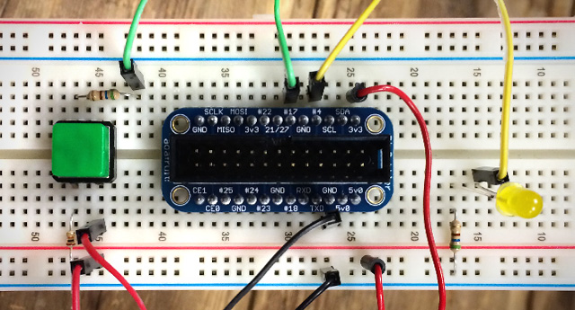

Step 4: Button circuit

So far, we have an LED circuit that lets Coder blink a light in the real world. Let’s build a button sensor circuit so that we can make something blink on your screen when a real-world button is pressed.
Wiring it all up:
- Place the button so that the legs span over the center line of the breadboard. The button legs should be facing the sides of the breadboard.
- Connect GPIO #17 (6th pin down on the left side) to one leg of the 560 Ohm resistor. Use a jumper wire so this is off to the side and not accidentally connected to another GPIO pin.
- Connect the other end of the resistor to a button leg.
- On the button leg immediately opposite from this input resistor, connect the 10K Ohm pull down resistor.
- The other leg of the 10K Ohm resistor connects to ground. This completes the “off” portion of the button circuit.
- Now connect a jumper wire from the 3.3v rail to the other button pin (the one diagonal from the 560 Ohm input resistor). This completes the power circuit for when the button is pressed.
How does this 4-legged button work?
A button like this is a simple switch. When it’s not pressed, the legs directly across each other are electrically connected, but the legs diagonally from each other are disconnected. When you press the button, all four of the pins become connected together.
How a GPIO input works.
When an I/O pin on Raspberry Pi is set up as an input, it allows your code to see one of two values: a low voltage setting which means 0, or a high voltage setting which means 1. Our circuit will cause GPIO #17 to be connected to ground when the button is not pressed. Your code will see this as a value of 0. The circuit will also take care of connecting GPIO #17 to the 3.3v power source as soon as the button is pressed. Your code will see this as a value of 1.
Technically, there’s also something weird that happens if your input pin isn’t connected to either ground and it isn’t connected to sufficient voltage. In this in-between state, when you don’t have an input pin connected to anything, the I/O pin is said to be “floating”. This can cause your code to see either a 0 or a 1 at random. We don’t want this to happen, so our button circuit is designed to only have two states: connected to ground, or connected to voltage.
What are the resistors for?
The most important resistor here is the 10K Ohm (brown black orange) resistor that connects our button to ground. Remember that when our button gets pressed, all of its legs become electrically connected. Notice that our button also connects to 3.3v on the other leg. So when that button is pressed, an electrical connection is made directly between our source voltage and ground; left unregulated, this is called a short circuit, and that’s a bad thing.
The 10K Ohm resistor keeps this short circuit from happening. 10K (or 10,000) Ohms is a lot of resistance to the flow of electricity, so instead of a short circuit when the button is pressed, there’s just the tiniest trickle of electricity that won’t affect anything. Instead, when the button is pressed, electricity will more easily flow from 3.3v to our input pin.
The 560 Ohm resistor isn’t completely necessary, but it protects our I/O pin from being damaged if we make a software mistake. You see, if the I/O pin is accidentally configured as an output pin (like our LED will be), and that pin is off, it becomes connected to ground. If the button is pressed at the same time, 3.3v would be shorted to ground right through the middle of our Raspberry Pi hardware. Yikes! To prevent this with software, we make sure to set this up as an input pin. To prevent this with hardware, we use this resistor to limit the amount of power that could accidentally flow to that pin.

At this point, you’re done with all the wiring. Above is a picture of how ours turned out.
If you thought that was a lot of work, check out what it would look like to breadboard a whole desktop computer!
Step 6: Looking at the code
Hop into the code editor and let’s investigate what’s happening. We’ve heavily commented most of the code in the project you downloaded, so you can just dig in if you prefer to learn that way. Otherwise, here’s a breakdown of a few things that make this project work.
Introducing the Node tab:
Node.js is a bit like the javascript you’re familiar with, but instead of running in your web browser, this javascript code actually runs on your Coder server. In a typical Coder app, Node is responsible for delivering the HTML that you create to your web browser, and then your web browser executes everything it receives.
In this app, the Node.js has a couple extra responsibilities:
GPIO
Because we need to interface with hardware, there needs to be code on the device that can communicate with that hardware. To do this, our Node.js code runs on the Coder server and uses a GPIO library to turn output pins on and off, and to listen to changes on input pins.
Web Sockets with Socket.IO
When a button is pushed, you want the light to light up right away, not after a second or two. In a normal web connection, the web browser connects to the server, asks it for a file (such as an HTML page), and then the browser disconnects from the server. All this connecting and disconnecting takes time. And what about the other direction, where the server needs to tell the web browser something, like “Hey a button got pressed?”
To solve this problem, we use a permanent connection called a web socket. This connection is established once, stays open until you close the web page, and the server and browser can talk to each other any time they like, as soon as something happens.
GPIO
Let’s put the web socket stuff to the side for a moment, and first take a look at how we configure and use GPIO pins using Node.js.
Enabling GPIO input and output pins
Click the Node tab on your project, and find for the function called enableGPIO. It looks like this:
//
// This is called once from our first socket connection.
// - set up the LED GPIO as an output
// - set up the Button GPIO as an input and tie it to send a "change" message
//
var enableGPIO = function() {
// Set up the LED output GPIO
console.log("Setting up LED as an output on GPIO " + ledGPIOID );
ledDevice = gpio.export( ledGPIOID, {
ready: function() {
// This works around a bug in gpio, where sometimes this device
// doesn't become immediately available.
setTimeout( function() {
ledDevice.setDirection("out");
}, 100); //wait 100 ms before setting direction
}
});
// Set up the button input GPIO
console.log("Setting up Button as an input on GPIO" + buttonGPIOID);
buttonDevice = gpio.export( buttonGPIOID, {
direction: "in",
ready: function() {
// Set up buttonDevice to call the buttonChange
// function (below) whenever its value changes.
buttonDevice.on("change", buttonChange);
}
});
};
We use the gpio.export( gpioid, options ) method to connect to and configure a GPIO pin. This function returns a handle to the GPIO device, which we can save to a variable and use over and over to read and write to. At the top of the file, you’ll find global variables ledGPIOID and buttonGPIOID that contain the GPIO number for the two pins we’re using. You’ll also see ledDevice and buttonDevice -- these variables store the gpio device handle that we retrieve from gpio.export.
We also use deviceHandle.setDirection("out") or deviceHandle.setDirection("in") to configure the pin as an output or input pin. Note that this is a little quirky (a bug in the gpio library), so we’re using a slight delay timer on ledDevice to make this happen after 100 milliseconds.
The enableGPIO function only needs to be run once, the first time a web browser connects to our app. You can imagine that more than one browser window might connect to this app, but we only have one physical LED and button. To accommodate this, our code needs to manage the GPIO devices carefully so that they can be shared between any connected windows.
There’s similar code in disableGPIO that tears everything down when the last browser window disconnects. In most cases, this will let you exit your app and everything will turn off so that you can go into another app and do something different with those GPIO pins.
Turning the LED on and off
Our setLED function is used to turn the LED on or off. It takes either a 0 (off) or a 1 (on) as a parameter. Just in case it receives the string "0" or "1", it uses parseInt to turn that into a proper integer value.
//
// Set the value on the LED GPIO device, either 0 (off) or 1 (on).
//
var setLED = function( val ) {
val = parseInt( val );
if ( val != 0 ) {
val = 1;
}
ledDevice.set( val );
};
The functional piece here is ledDevice.set( val ). Recall that ledDevice is the GPIO handle we received from gpio.export. Setting a value of 1 or 0 to this device will turn the LED on and off.
Detecting a button press
Let’s look back inside the enableGPIO function, where we set up the button device:
buttonDevice = gpio.export( buttonGPIOID, {
direction: "in",
ready: function() {
// Set up buttonDevice to call the buttonChange
// function (below) whenever its value changes.
buttonDevice.on("change", buttonChange);
}
});
The second parameter to the gpio.export function is a map of options. One of those options has the key “ready”, which is a function that will be run once the device becomes available and ready to use. For GPIO input devices, we can register an event handler that runs a piece of code every time the value of that input changes.
buttonDevice.on("change", buttonChange);
Now, every time our button is pressed or released, the buttonChange function is run. That function is responsible for processing the new button value. In this case, we’re sending that bit of data from Node (running on our server) through a web socket to the front end Javascript (running in a connected web browser).
Web Sockets - Client Side
Okay. So now you know how to get data to and from a GPIO pin, but how does a click from the web browser get to our Node.js code. And how does a button press on the Raspberry Pi get sent back to any web browser that’s running our app? For this, we need to look at web sockets.
This is rad and complicated, so let’s just dig in.
Create a web socket to talk to Node from the browser
Jump over to your Javascript code and you’ll find Coder.socketConnection.init:
$(document).ready( function() {
Coder.socketConnection.init(function(){
// Send a "connect" message to our Node page when we first connect.
Coder.socketConnection.sendData( 'connect', {} );
});
});
The Coder.socketConnection.init( callback ) function makes a socket connection to the Coder server, and calls the callback function once the connection is established. The Coder library that’s included by default in your project (it’s the coderlib reference in your HTML’s head includes) is what makes Coder.socketConnection available in your projects. This object will make it easy to create a web socket to communicate with your Node code.
Send a message from the web browser to Node
To send data from the browser Javascript to the Node.js server-side code, you just call “Coder.socketConnection.sendData( name, dataObj )”. It takes two parameters, a string name, which will tell the server what type of data it’s receiving, and a data object, which can contain whatever data you like.
In this case, we send a “connect” message, with no data inside. This will tell our back-end code that that the browser has connected.
We also use Coder.socketConnection.sendData to tell Node to turn our light on or off. Check out the ledOn function in your JS tab.
// Send a "setled" message to the device with a value of 1 (on)
var ledOn = function() {
ledValue = 1;
Coder.socketConnection.sendData( 'setled', {
'value': ledValue
});
};
That sends a "setled" message along with a bundle of data that contains a 0 or 1 for the led value.
Receive a message on the web browser from Node
The web socket works in both directions, which means you can also receive data. To do this, add a listener with “Coder.socketConnection.addListener” to respond to specific message types that the Node app is sending.
Here’s the code that handles a "buttonupdate" message from the Node server. This message is sent every time the button is pressed or released.
Coder.socketConnection.addListener( 'buttonupdate', function( d ){
console.log("button gpio value: " + d);
// The data we get should be an integer, 0 (off) or 1 (button pressed).
var val = parseInt( d );
if ( d === 1 ) {
$("#buttonval").addClass('on');
} else {
$("#buttonval").removeClass('on');
}
});
We use that information on the front-end Javascript to turn the virtual LED on and off.
Web Sockets - Server Side
In our server-side Node.js code, we also need to handle these socket messages. Coder is set up so that it’s easy to respond to these messages, but the Node app also needs to do a little extra work to manage connections as they come and go.
Switch over to the Node tab and let’s see how to put this together.
Receiving a message in Node from the browser
To receive messages in Node, you use exports.socketio_routes to register the types of messages your want to respond to:
// Incoming socket events that this module will expose.
exports.socketio_routes = [
{ key:'connect', handler:'on_socket_connect' }, // sent by client once socket is loaded
{ key:'setled', handler:'on_socket_setled' }, // sent by client to turn on/off the led
];
Here we’ve defined two socket messages for our app to receive, connect and setled. Remember that these are the message types we sent to the server from Javascript. By defining handlers for these messages, a specific function will be called whenever a message is received, such as “on_socket_connect” or “on_socket_setled” in this example.
These handlers will be sent a handle to the socket that sent the data (each browser connection has a different socket handle), as well as the data being sent from the Javascript side. Here’s the on_socket_setled handler that calls the setLED function every time a setled message is received:
exports.on_socket_setled = function( socket, data ) {
if ( data.value !== "undefined" ) {
setLED( data.value );
}
};
Note: you need to export this function with exports.function_name or the Coder server won’t be able to access it in your app module.
Managing socket connections
If we want to send data back to the front-end Javascript, it’s important to keep track of all the connected browser sockets. When you want to send data, you’ll need to know which connection to send it to.
In this example, which you’ll find inside exports.on_socket_connect, Node receives the connect message and stores the socket connection in a key/value array so it can be used later.
// Store information about this socket so we can communicate with
// all connected sockets in the future.
connections[socket.socketID] = {
socket: socket,
id: socket.socketID
};
It’s also important to forget about this connection when it has been disconnected. You can do that by listening for the disconnect event:
// Watch for this socket to disconnect so that we can remove it from
// our collection of connected sockets.
socket.on('disconnect', function() {
console.log( 'socket disconnect from ID: ' + socket.socketID );
delete connections[socket.socketID];
//Free up the GPIO when the last socket disconnects
if ( Object.keys( connections ).length <= 0 ) {
disableGPIO();
connected = false;
}
});
For most web sockets apps in Coder, you’ll likely want to do some variation of this. Feel free to copy this code and change it to meet your needs.
Sending data from Node to the front-end Javascript
So we can receive data from the front-end in Node and we can keep track of all our connections. The only missing piece is to be able to send data from Node to the web browser.
Actually, let’s send data from the Node.js code on the server, to every single browser that’s connected!
We’ll do this every time the button is pressed:
var buttonChange = function( val ) {
// Recall that this code is running on the device. We need to send a
// socket message with the button data to our javascript in the
// web browser. In fact, we need to send this data to every connected
// socket, since there may be more than one browser window looking at
// this page.
console.log( "buttonChange event with value: " + val );
// Iterate through all of our socket connections
for ( var socketid in connections ) {
// Get the socket object for this socket
var socket = connections[socketid].socket;
// The "appdata" event will be received by the Coder.socketConnection
// object in the front end code and sent to the appropriate listener
// that we've defined.
// The "buttonupdate" key refers to a listener we set up on the front
// end with the code:
// Coder.socketConnection.addListener( "buttonupdate", function... )
socket.emit( "appdata", {
key: "buttonupdate",
data: val
});
}
};
That for loop iterates over every single socket connection to this app and sends a buttonupdate message.
Try it out. Even if you open a bunch of windows or connect from a couple of totally different computers, they will all light up when you push the physical button on the circuit you built!